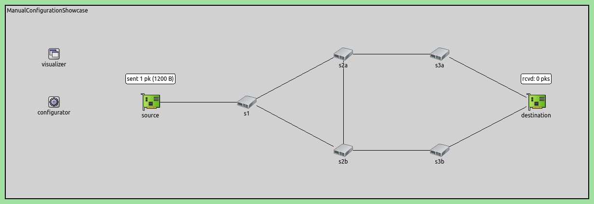
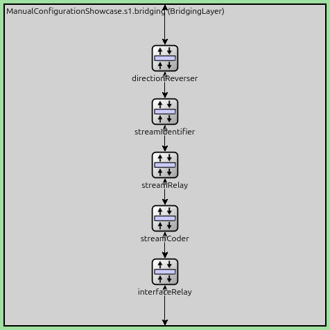
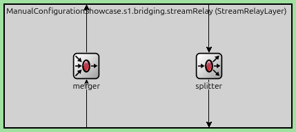
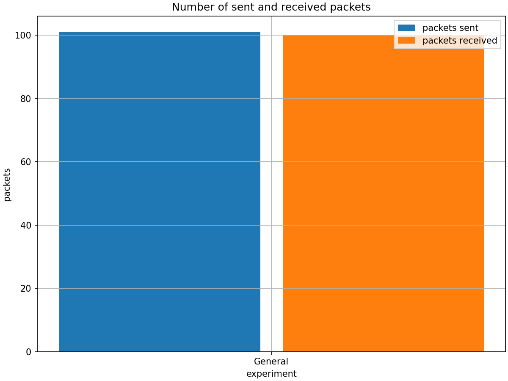
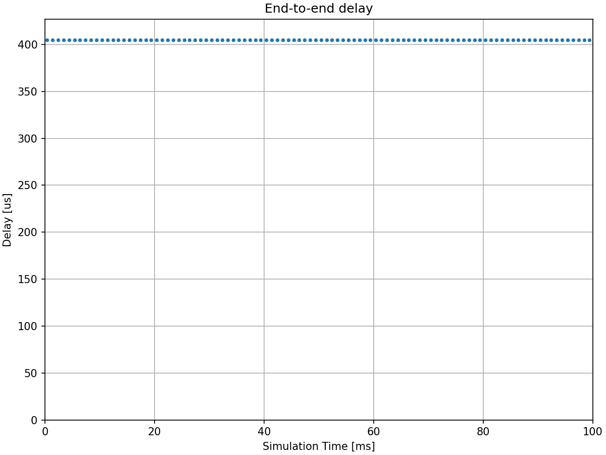

Manual Stream Configuration¶
Goals¶
In this example, we demonstrate manual configuration of stream identification, stream splitting, stream merging, stream encoding, and stream decoding to achieve the desired stream redundancy using the Frame Replication and Elimination for Reliability (FRER) mechanism defined in IEEE 802.1CB.
4.6Overview¶
Frame Replication and Elimination¶
Frame Replication and Elimination for Reliability (FRER) is a mechanism standardized in IEEE 802.1CB that provides seamless redundancy for time-sensitive networking applications. The core idea is to protect critical data streams against link failures and packet loss by:
Replicating frames: At strategic points in the network, frames from a stream are duplicated and sent along multiple disjoint paths toward the destination.
Eliminating duplicates: At merge points and at the destination, duplicate frames are identified (using sequence numbers) and eliminated, ensuring that only one copy of each frame is delivered to the application.
For more information about FRER, read the corresponding section in the INET User’s Guide.
Network Implementation Strategy¶
This showcase implements FRER in a network topology from the IEEE 802.1CB standard, featuring one source node, one destination node, and five switches arranged to provide multiple redundant paths.
Network Topology¶
Here is the network:

The network consists of:
source: Generates a UDP data stream
s1: First-level switch that performs the initial stream split
s2a, s2b: Second-level switches that provide cross-path redundancy
s3a, s3b: Third-level switches that forward streams to the destination
destination: Receives the stream and performs final duplicate elimination
Redundant Path Structure¶
The network topology provides four redundant paths from source to destination:
Path 1 (Upper Direct): source → s1 → s2a → s3a → destination
Path 2 (Upper-to-Lower Cross): source → s1 → s2a → s2b → s3b → destination
Path 3 (Lower Direct): source → s1 → s2b → s3b → destination
Path 4 (Lower-to-Upper Cross): source → s1 → s2b → s2a → s3a → destination
The key to this redundancy is the connection between s2a and s2b, which creates the cross-paths (Paths 2 and 4). This allows the network to tolerate multiple simultaneous link failures.
Stream Hierarchy and Naming¶
The streams are named according to their position in the network:
s1: The original stream from the source
s2a, s2b: First-level split streams (created at s1)
s2a-s2b: Stream from s2a crossing to s2b
s2b-s2a: Stream from s2b crossing to s2a
s3a, s3b: Second-level split streams (created at s2a and s2b)
This hierarchical naming reflects the replication and merging operations:
At s1: Stream s1 is split into s2a and s2b
At s2a: Streams s2a and s2b-s2a are merged, then split into s3a and s2b (cross-stream)
At s2b: Streams s2b and s2a-s2b are merged, then split into s3b and s2a (cross-stream)
At destination: Streams s3a and s3b are merged into a null stream (final elimination)
VLAN Encoding Strategy¶
The network uses two VLANs to maintain stream separation:
VLAN 1: Used for primary path streams (s1, s2a, s3a, and cross-stream s2b-s2a)
VLAN 2: Used for secondary path streams (s2b, cross-stream s2a-s2b)
Each switch maps streams to VLANs for forwarding, then the next hop decodes the VLAN back to stream identity for processing.
Node Failure Scenario¶
The configuration includes a scenario that simulates a switch failure to demonstrate the network’s resilience:
- At t=20ms: Switch s2a crashes
x Path 1 fails (uses s2a)
x Path 2 fails (uses s2a)
x Path 4 fails (uses s2a)
x Path 3 survives (uses s1 → s2b → s3b → destination)
- At t=80ms: Switch s2a recovers
✓ All four paths become operational again
During the failure period (20-80ms), Path 3 remains operational, ensuring continuous packet delivery. After recovery, the network returns to full redundancy with all four paths available.
This demonstrates that the mesh topology with FRER can maintain connectivity even during equipment failures, as long as at least one complete path remains operational.
The Model¶
FRER Configuration Overview¶
The following operations must be configured at each network node in the order that packets traverse the system:
At the source: Configure stream identification with sequence numbering, followed by stream encoding
At each switch: Configure VLAN filtering, stream decoding, stream merging (for converging paths), stream splitting (for diverging paths), stream encoding, and MAC forwarding
At the destination: Configure stream decoding and final stream merging into a null stream
To enable FRER, set hasStreamRedundancy = true in the TsnSwitch and TsnDevice modules. FRER is then configured within the bridging layer, which contains the following submodule structure:

FRER configuration relies on three key submodules:
StreamIdentifierLayer: Assigns packets to named streams and provides sequence numbering
StreamCoderLayer: Translates between stream names and VLAN tags bidirectionally
StreamRelayLayer: Contains StreamMerger (eliminates duplicates) and StreamSplitter (replicates streams) submodules
The internal structure of a StreamRelayLayer module is shown below:

Stream merging and splitting occur based on the packet flow direction within the bridging layer. Incoming streams first pass through the merger in the StreamRelayLayer, are redirected by the DirectionReverserLayer, and then pass through the splitter in the StreamRelayLayer.
The detailed configuration for each node follows below.
Basic Configuration¶
Disable automatic MAC table configuration so we can manually configure stream forwarding rules.
*.macForwardingTableConfigurator.typename = ""
Configure the node failure scenario: switch s2a crashes at 20ms and recovers at 80ms. This tests the network’s ability to maintain connectivity through redundant paths during equipment failure.
*.scenarioManager.script = xml("<script>\
<at t='20ms'><crash module='s2a'/></at> \
<at t='80ms'><startup module='s2a'/></at> \
</script>")
Enable FRER functionality in all network nodes, allowing them to perform stream splitting, merging, encoding, and decoding operations.
*.*.hasStreamRedundancy = true
Configure the source application to generate UDP packets with 1200-byte payloads at 1ms intervals. The packets are sent to the destination node on port 1000.
*.source.numApps = 1
*.source.app[0].typename = "UdpSourceApp"
*.source.app[0].io.destAddress = "destination"
*.source.app[0].io.destPort = 1000
*.source.app[0].source.displayStringTextFormat = "sent %p pk (%l)"
*.source.app[0].source.packetLength = 1200B
*.source.app[0].source.productionInterval = 1ms
Configure the destination to receive UDP packets on port 1000. Importantly, configure both Ethernet interfaces with the same MAC address so they can accept packets from either path (s3a or s3b).
*.destination.numApps = 1
*.destination.app[0].typename = "UdpSinkApp"
*.destination.app[0].io.localPort = 1000
# all interfaces must have the same address to accept packets from all streams
*.destination.eth[*].address = "0A-AA-12-34-56-78"
Stream Identification: Mark all outgoing packets as stream “s1” and enable sequence numbering. This is the entry point for FRER - each packet gets assigned a unique sequence number that will be used for duplicate detection throughout the network.
Stream Encoding: Encode stream s1 with VLAN tag 1 before being sent to switch s1. This allows the network to route the stream using standard VLAN-based forwarding.
*.source.bridging.streamIdentifier.identifier.mapping = [{packetFilter: "*", stream: "s1", sequenceNumbering: true}]
# encode egress stream s1 to VLAN 1
*.source.bridging.streamCoder.encoder.mapping = [{stream: "s1", vlan: 1}]
Switch s1 Configuration¶
Only accept VLAN 1 traffic from the source.
*.s1.ieee8021q.qTagHeaderChecker.vlanIdFilter = [1]
Decode incoming VLAN 1 traffic on eth2 as stream s1.
*.s1.bridging.streamCoder.decoder.mapping = [{interface: "eth2", vlan: 1, stream: "s1"}]
Replication Point: This is where the initial split occurs. Duplicate stream s1 into two separate streams (s2a and s2b), creating the first level of redundancy.
*.s1.bridging.streamRelay.splitter.mapping = {s1: ["s2a", "s2b"]}
Encode stream s2a with VLAN 1, while encode stream s2b with VLAN 2.
*.s1.bridging.streamCoder.encoder.mapping = [{stream: "s2a", vlan: 1},
{stream: "s2b", vlan: 2}]
Forward packets with VLAN 1 to eth0 (towards s2a), packets with VLAN 2 to eth1 (towards s2b).
*.s1.macTable.forwardingTable = [{address: "destination", vlan: 1, interface: "eth0"},
{address: "destination", vlan: 2, interface: "eth1"}]
Switch s2a Configuration¶
Accept traffic with both VLAN 1 and 2.
*.s2a.ieee8021q.qTagHeaderChecker.vlanIdFilter = [1, 2]
Decode incoming traffic: eth2 VLAN 1 as stream s2a (from s1), eth1 VLAN 2 as stream s2b-s2a (cross-path from s2b).
*.s2a.bridging.streamCoder.decoder.mapping = [{interface: "eth2", vlan: 1, stream: "s2a"},
{interface: "eth1", vlan: 2, stream: "s2b-s2a"}]
Merge Point: Combine streams s2a (from s1) and s2b-s2a (cross-path from s2b) into a single stream s3a. The merger eliminates duplicates using sequence numbers, ensuring each frame is forwarded only once even if it arrives on both paths.
*.s2a.bridging.streamRelay.merger.mapping = {s2a: "s3a", "s2b-s2a": "s3a"}
Second-Level Split: Create mesh redundancy by splitting the merged stream s3a into:
Stream s3a is forwarded to s3a
Stream s2b is cross-path forwarded to s2b for additional redundancy
This creates Paths 1 and 2.
*.s2a.bridging.streamRelay.splitter.mapping = {s3a: ["s3a", "s2b"]}
Map stream s3a to VLAN 1 and s2b to VLAN 2.
*.s2a.bridging.streamCoder.encoder.mapping = [{stream: "s3a", vlan: 1},
{stream: "s2b", vlan: 2}]
Forward packets with VLAN 1 to eth0 (towards s3a), VLAN 2 to eth1 (towards s2b for the cross-path).
*.s2a.macTable.forwardingTable = [{address: "destination", vlan: 1, interface: "eth0"},
{address: "destination", vlan: 2, interface: "eth1"}]
Switch s2b Configuration¶
Accept traffic with both VLAN 1 and 2.
*.s2b.ieee8021q.qTagHeaderChecker.vlanIdFilter = [1, 2]
Decode incoming traffic: eth2 VLAN 2 → stream s2b (from s1), eth1 VLAN 2 → stream s2a-s2b (cross-path from s2a).
*.s2b.bridging.streamCoder.decoder.mapping = [{interface: "eth2", vlan: 2, stream: "s2b"},
{interface: "eth1", vlan: 2, stream: "s2a-s2b"}]
Merge Point: Combine streams s2b (from s1) and s2a-s2b (cross-path from s2a) into stream s3b, eliminate duplicates.
*.s2b.bridging.streamRelay.merger.mapping = {s2b: "s3b", "s2a-s2b": "s3b"}
Second-Level Split: Create the complementary mesh by splitting s3b into:
Stream s3b (VLAN 1) → forwarded to s3b toward destination
Stream s2a (VLAN 2) → cross-path forwarded to s2a for additional redundancy
This creates Paths 2 and 3 from the source.
*.s2b.bridging.streamRelay.splitter.mapping = {s3b: ["s3b", "s2a"]}
Stream s3a maps to VLAN 1 and s2a to VLAN 2.
*.s2b.bridging.streamCoder.encoder.mapping = [{stream: "s3b", vlan: 1},
{stream: "s2a", vlan: 2}]
Forward packets with VLAN 1 to eth0 (towards s3b), and VLAN 2 to eth1 (towards s2a cross-path).
*.s2b.macTable.forwardingTable = [{address: "destination", vlan: 1, interface: "eth0"},
{address: "destination", vlan: 2, interface: "eth1"}]
Switches s3a and s3b Configuration¶
Configure both s3a and s3b as simple forwarding switches with no splitting or merging. Decode their respective streams (s3a or s3b) from VLAN 1, and forward them to the destination with VLAN 1 encoding. These switches simply relay the streams toward the final destination.
# map eth1 VLAN 1 to stream s3a
*.s3a.bridging.streamCoder.decoder.mapping = [{interface: "eth1", vlan: 1, stream: "s3a"}]
# stream s3a maps to VLAN 1
*.s3a.bridging.streamCoder.encoder.mapping = [{stream: "s3a", vlan: 1}]
# allow ingress traffic from VLAN 1
*.s3a.ieee8021q.qTagHeaderChecker.vlanIdFilter = [1]
# map destination MAC address and VLAN pairs to network interfaces in s3a
*.s3a.macTable.forwardingTable = [{address: "destination", vlan: 1, interface: "eth0"}]
# map eth1 VLAN 1 to stream s3b
*.s3b.bridging.streamCoder.decoder.mapping = [{interface: "eth1", vlan: 1, stream: "s3b"}]
# stream s3b maps to VLAN 1
*.s3b.bridging.streamCoder.encoder.mapping = [{stream: "s3b", vlan: 1}]
# allow ingress traffic from VLAN 1
*.s3b.ieee8021q.qTagHeaderChecker.vlanIdFilter = [1]
# map destination MAC address and VLAN pairs to network interfaces on s3b
*.s3b.macTable.forwardingTable = [{address: "destination", vlan: 1, interface: "eth0"}]
Destination Node Configuration¶
Final Elimination Point: Decode streams s3a and s3b and merge them into a null stream (empty string). This performs the final duplicate elimination - only forward the first copy of each frame (identified by sequence number) to the application, while discard later duplicates. This ensures the application receives exactly one copy of each frame, regardless of which path(s) it arrived on.
# allow ingress traffic from VLAN 1
*.destination.ieee8021q.qTagHeaderChecker.vlanIdFilter = [1]
# map eth0 VLAN 1 to stream s3a and eth1 VLAN 1 to stream s3b
*.destination.bridging.streamCoder.decoder.mapping = [{interface: "eth0", vlan: 1, stream: "s3a"},
{interface: "eth1", vlan: 1, stream: "s3b"}]
# merge streams s3a and s3b into null stream
*.destination.bridging.streamRelay.merger.mapping = {s3a: "", s3b: ""}
Results¶
The following video shows traffic in the network just before and after node s2a fails:
Here are the number of received and sent packets at the application layer:
{kind=link}

The number of received packets is slightly lower, because some packets are still en-route when the simulation ends. The following chart displays the end-to-end delay:
{kind=link}

The chart shows that there is no service interruption during the node failure interval (20ms-80ms). This demonstrates the effectiveness of the FRER mechanism in maintaining network connectivity even under certain failure conditions.
Sources: omnetpp.ini, ManualConfigurationShowcase.ned
Try It Yourself¶
If you already have INET and OMNeT++ installed, start the IDE by typing
omnetpp, import the INET project into the IDE, then navigate to the
inet/showcases/tsn/framereplication/manualconfiguration folder in the Project Explorer. There, you can view
and edit the showcase files, run simulations, and analyze results.
Otherwise, there is an easy way to install INET and OMNeT++ using opp_env, and run the simulation interactively.
Ensure that opp_env is installed on your system, then execute:
$ opp_env run inet-4.6 --init -w inet-workspace --install --build-modes=release --chdir \
-c 'cd inet-4.6.*/showcases/tsn/framereplication/manualconfiguration && inet'
This command creates an inet-workspace directory, installs the appropriate
versions of INET and OMNeT++ within it, and launches the inet command in the
showcase directory for interactive simulation.
Alternatively, for a more hands-on experience, you can first set up the workspace and then open an interactive shell:
$ opp_env install --init -w inet-workspace --build-modes=release inet-4.6
$ cd inet-workspace
$ opp_env shell
Inside the shell, start the IDE by typing omnetpp, import the INET project,
then start exploring.
Discussion¶
Use this page in the GitHub issue tracker for commenting on this showcase.